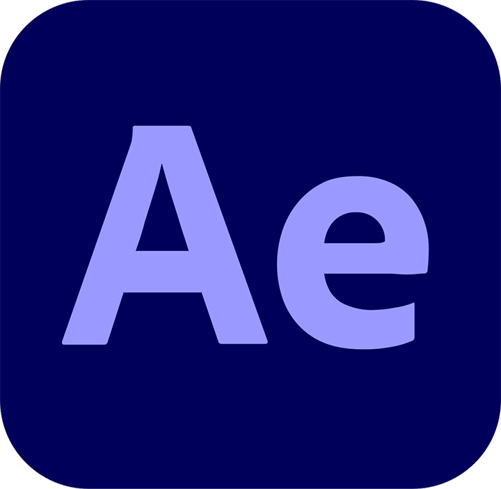
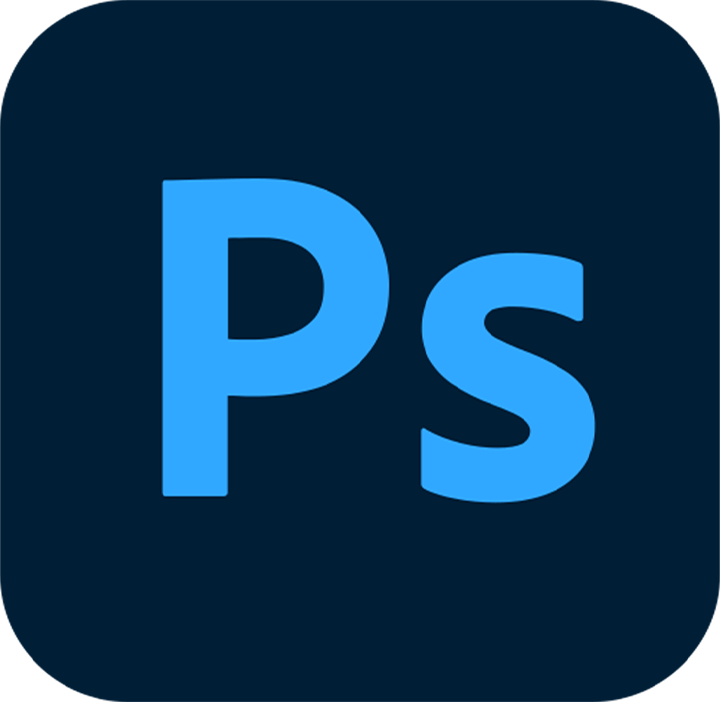
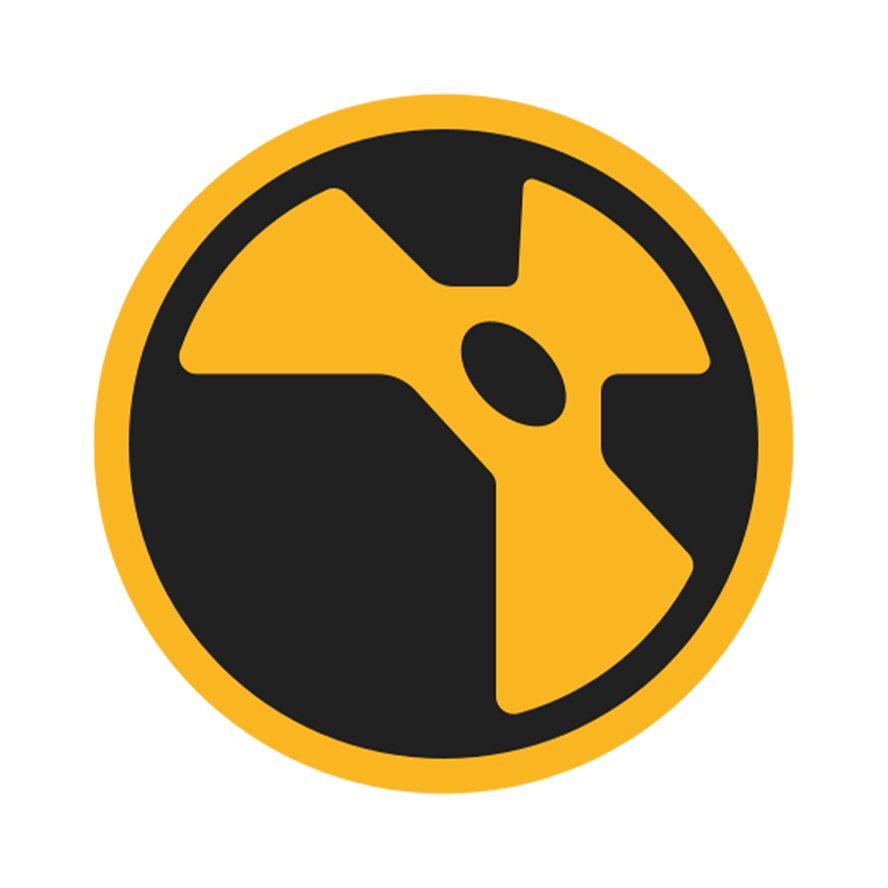

Hi, I'm Joe
this is my portfolio
I'm a creative generalist — covering graphic design, brand identity, 3D design and visualization.
Software

After Effects
Photoshop- Illustrator
 InDesign
InDesign
 Autodesk Maya
Autodesk Maya Unreal Engine 5
Unreal Engine 5 Substance Painter
Substance Painter
NukeX